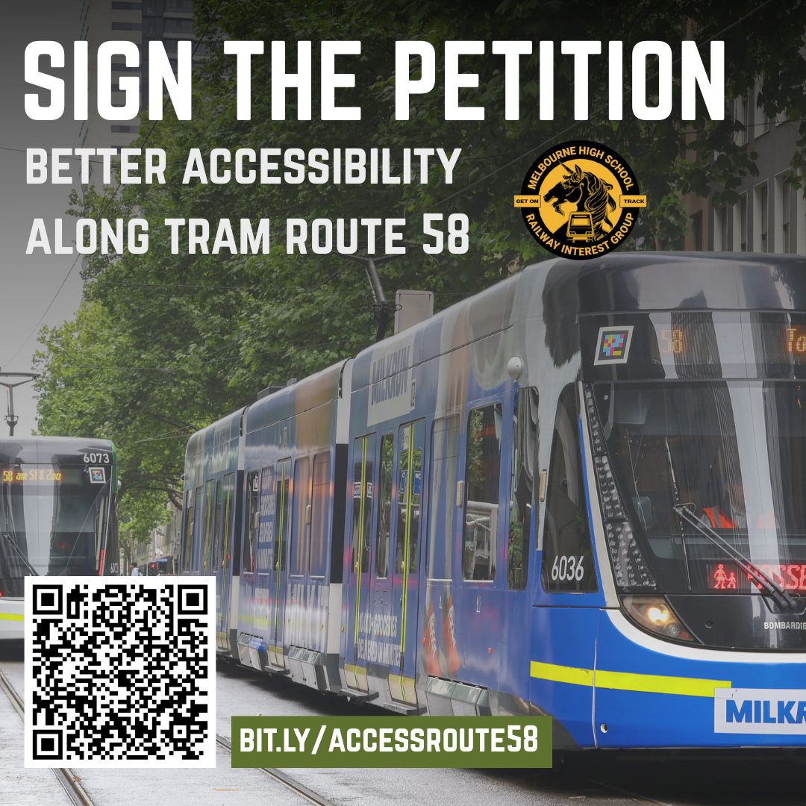

Our Advocacy Work
Our advocacy work seeks to improve public transport in Melbourne, to benefit commuters all over the state.
Our advocacy work seeks to improve public transport in Melbourne, to benefit commuters all over the state.
While Route 58 is a busy and productive tram route, serving West Coburg, the City and South Yarra, it is not fully accessible. Just under half of the route still uses aging B Class Trams, which are high-floor and inaccessible. This means passengers with impaired mobility, as well as those with prams, cannot rely on the service. In addition, many stops on the route lack level boarding and do not have proper tram information.
Route 58 deserves better. We are calling for a timeline for a fully low-floor tram service, as well as upgraded stops and passenger information. Sign the petition here.

Support us in our mission for an accessible Route 58!